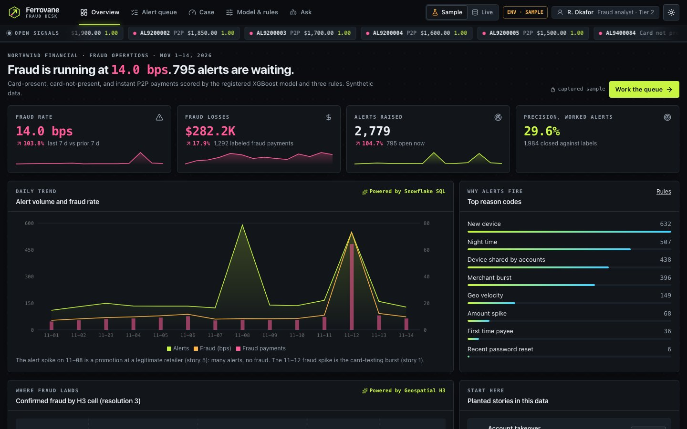
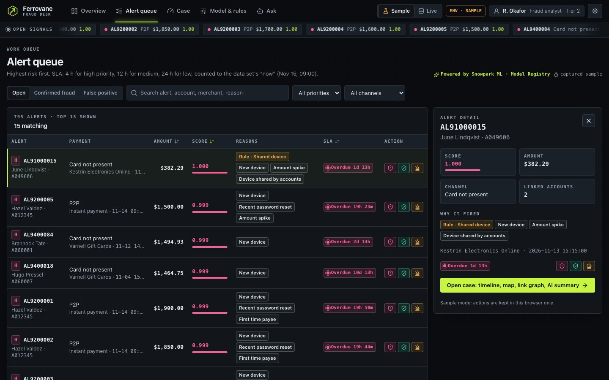
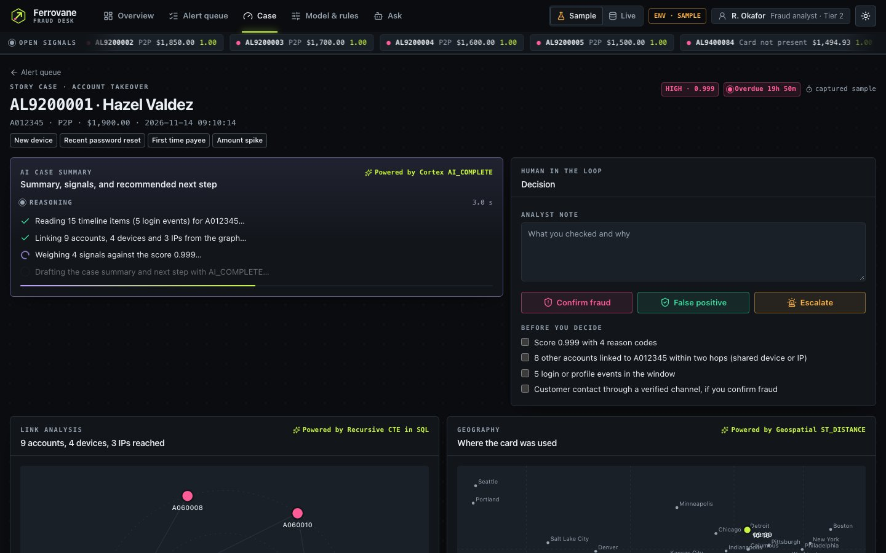
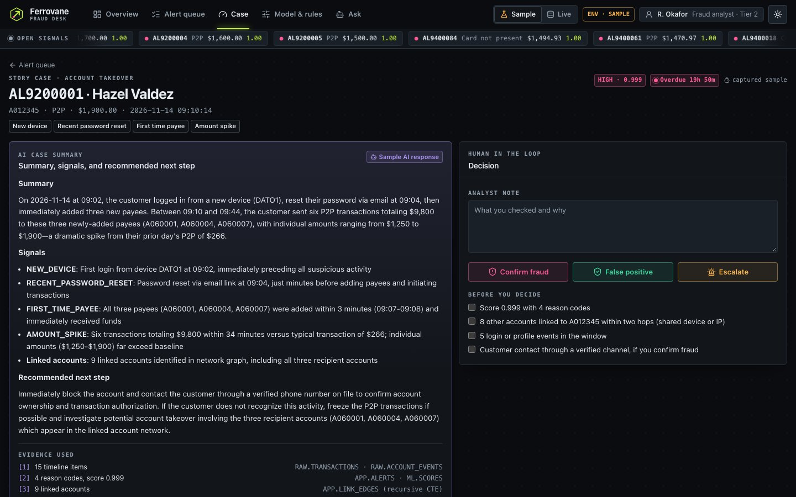
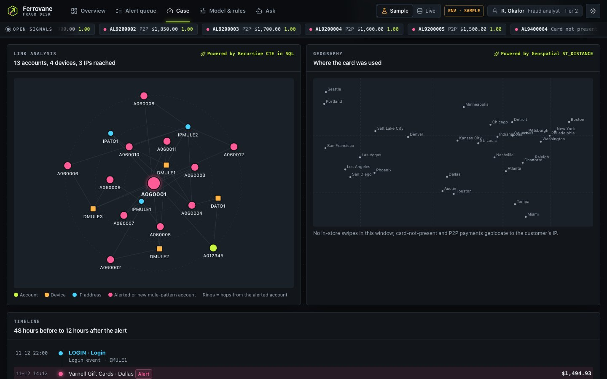
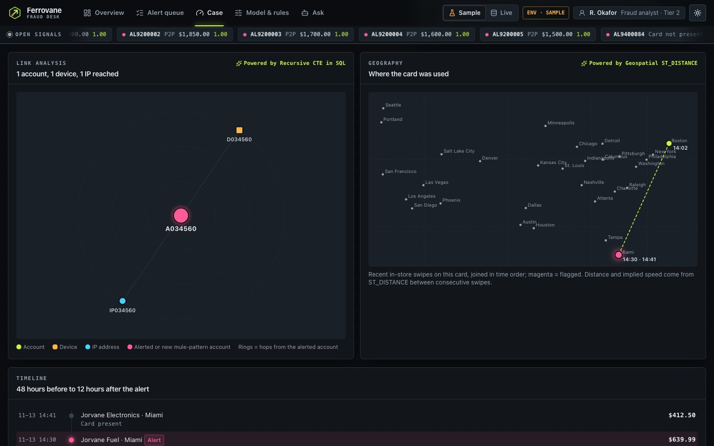
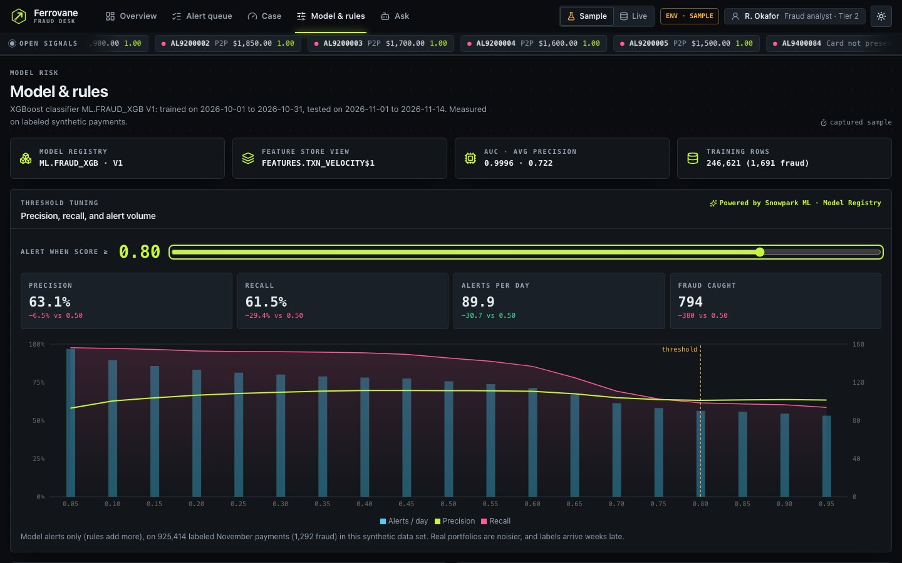
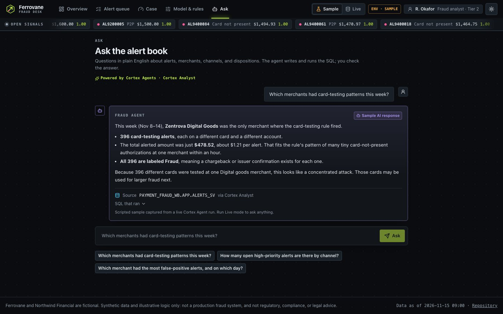
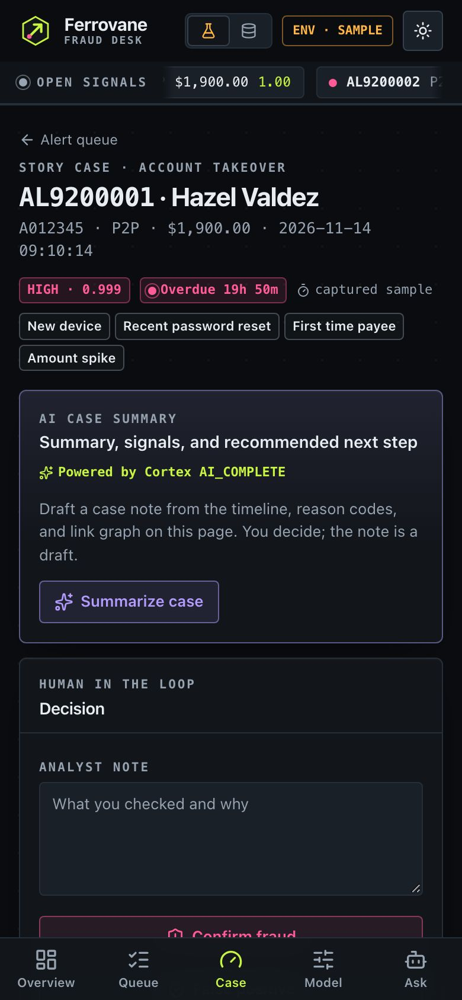

Fraud rings hide in the links between accounts. Find them before the money moves.
Fraud analysts work alerts one payment at a time while card testers, account takeovers, and mule rings act across many. This Snowflake example scores card and instant payments, shows the accounts, devices, and IPs behind each alert, and drafts the case note with AI so the analyst can decide faster.
Synthetic data and illustrative logic only. Ferrovane, Northwind Financial, and every person, merchant, and account are fictional. This is not a production fraud system and not regulatory, compliance, or legal advice. It is an example, not an official Snowflake product, and is not supported by Snowflake Support.
Signal, evidence, decision
Five screens follow one analyst through a shift: what is happening, what to work first, why a payment looks wrong, and what to do about it.
Score and queue
An XGBoost model from the Model Registry scores every payment on Feature Store velocity features; three SQL rules add card testing, impossible travel, and shared devices. Alerts land in a queue ranked by score with an SLA timer.
See the links
Each case shows the payment and login timeline, a map of in-store swipes with distances from ST_DISTANCE, and a link graph of accounts, devices, and IPs found with a recursive CTE.
Draft, then decide
AI_COMPLETE drafts the case summary and next step from the facts on the page, citing what it used. The analyst confirms fraud, marks a false positive, or escalates; the decision is written back to Snowflake.
What the analyst sees
Screenshots from the no-account example on the bundled synthetic data. Every number describes this synthetic data set only.









Works at 390 px
Tabs move to a bottom bar, tables become row cards, and nothing scrolls sideways, so an on-call lead can check a case from anywhere.
Snowflake capabilities this example runs
Every capability below ran in Live mode on the synthetic data. Real-time scoring is out of scope: payments are scored in batch, and the README explains how Snowpipe Streaming and model serving on Snowpark Container Services would fit.
| Capability | Used for |
|---|---|
| Feature Store on Dynamic Tables | 14 card, account, device, merchant, and geo velocity features |
| Snowpark ML and the Model Registry | Train an XGBoost classifier, register it, and score payments in batch with model.run |
| ST_DISTANCE and H3 functions | Impossible-travel rule and the fraud map by H3 cell |
| Recursive CTE | Link graph of accounts, devices, and IPs |
| AI_COMPLETE | AI case summary and next step |
| Cortex Agents with Cortex Analyst over a semantic view | Plain-English questions about alerts |
Two ways to run it
Sample mode: no account
Open the hosted example, or run it locally on the bundled synthetic data:
git clone https://github.com/sfc-gh-ooral/sfguide-payment-fraud-workbench.git cd sfguide-payment-fraud-workbench npm install && npm run dev
AI answers are labeled Sample AI response: they were captured from live runs.
Live mode: your Snowflake account
- Run sql/setup.sql as ACCOUNTADMIN (about 3 minutes on an XSMALL warehouse).
- Register a key pair on your user and fill in .env.local.
- Run npm run dev and switch to Live.
- Run sql/cleanup.sql when you're done.
Steps, objects created, cost, and limitations are in the README.